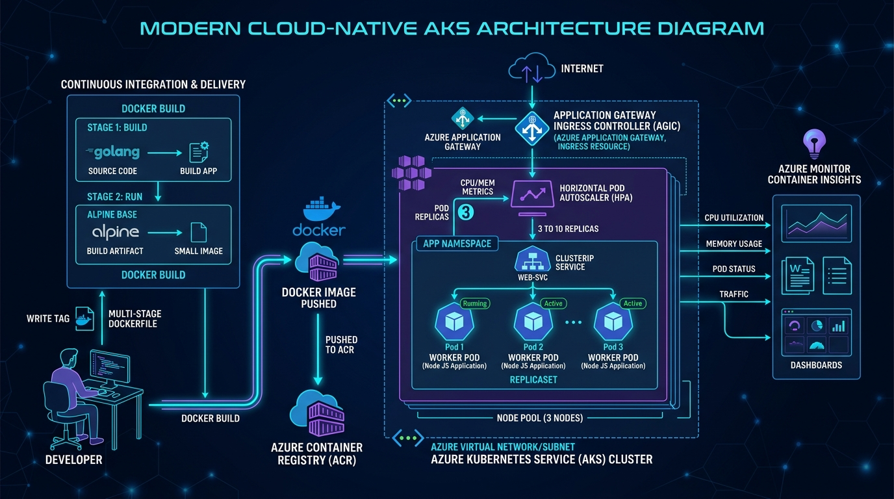

Comprehensive Practice Guide
Azure AKS Cloud-Native Platform
Complete Beginner-Friendly Docker, Kubernetes & AKS Guide with Architecture Diagrams, Portal Inspection Steps & Interview Q&A

Figure 3.1: Production Cloud-Native Architecture with Docker Multi-Stage Builds, Azure Container Registry (ACR), Azure Kubernetes Service (AKS), Ingress, and Horizontal Pod Autoscaling (HPA).
🚢 1. The Big Picture & Real-World Analogy
Imagine a massive, modern international shipping port:
- The Cargo Container (Docker Container):
In traditional VMs, moving software was like loading loose cargo boxes into trucks of all different shapes. Docker standardized steel containers: your code, runtime, libraries, and configurations are sealed inside an immutable box that runs identically on your laptop or inside Azure AKS.
- The Secure Bonded Warehouse (Azure Container Registry - ACR):
Before containers are placed onto ships, they are stored in a secure cloud warehouse. Only authorized port cranes can store or retrieve them.
- The Master Robotic Port Dispatcher (Kubernetes / AKS):
With thousands of containers moving, humans cannot manually organize them. Kubernetes handles the operations:
- Scheduler: Identifies which ship (Worker Node) has available deck space (CPU/RAM) and loads the container (Pod).
- Self-Healing: If a container crashes, the crane replaces it with a fresh replica immediately.
- Autoscaler (HPA): If orders surge during holiday sales, it deploys 10 identical container replicas in seconds.
- The Customs Gate (Application Gateway / Ingress Controller):
External internet users do not access worker nodes directly. They pass through a single secure customs gate that terminates HTTPS, verifies security rules, and routes traffic to the correct container.
🐳 2. Core Container & Kubernetes Concepts Explained (Points-Based)
- Virtual Machines vs Containers:
A VM contains a full guest OS, kernel, and virtual drivers (gigabytes in size, minutes to boot). A container shares the host Linux kernel and isolates only the application process using Linux cgroups (resource limits) and namespaces (visibility). It starts in milliseconds and weighs only ~50MB.
- Multi-Stage Dockerfile:
Stage 1 (Builder) installs heavy build tools and compilers. Stage 2 (Runtime) copies *only* the compiled application into a clean Alpine Linux image. This minimizes image size and removes attack tools hackers could exploit.
- Non-Root Security Hardening:
By default, containers run as root (
UID 0). If an attacker escapes the container, they could gain root privileges on the Azure host VM. Setting USER 1001 and securityContext: runAsNonRoot: true protects against host compromise.
- Control Plane vs Worker Nodes:
In AKS, Microsoft manages the Control Plane (API Server, etcd, Scheduler, Controller Manager) for free with high availability. You manage only the Worker Nodes and workloads.
- Core Kubernetes Objects:
- Namespace: Logical cluster boundary (
cloud-platform) for isolation.
- Pod: Smallest deployable unit; one or more containers sharing network and storage.
- Deployment: Manages Pod replicas, rolling updates, and self-healing.
- ClusterIP Service: Internal load balancer providing a stable virtual IP for healthy pods.
- Ingress: Layer 7 reverse proxy routing external HTTP/HTTPS traffic to internal services.
- Horizontal Pod Autoscaler (HPA): Scales pod replicas dynamically based on CPU/Memory load.
- Health Probes:
- Liveness Probe (
/healthz): Verifies the app is alive. If it fails, Kubernetes restarts the container.
- Readiness Probe (
/ready): Verifies the app is ready for user traffic. If it fails, the Service stops sending traffic to that pod until it recovers.
- Zero-Secret ACR Integration (
AcrPull):
AKS uses its Kubelet Managed Identity with the Azure RBAC role AcrPull on the ACR. The cluster pulls images automatically without storing passwords in Kubernetes secrets.
🖱️ 3. Step-by-Step Azure Portal (UI / GUI) Practice Guide
- Go to portal.azure.com → Search "Kubernetes services" → Click
aks-aksplatform-prod.
- On the Overview page, observe the API server address and Kubernetes version (e.g. 1.29).
- Click "Node pools" on the left menu: observe
systempool running on Azure VM Scale Sets with auto-scaling rules.
- On the left menu under Kubernetes resources → Click "Namespaces": observe
cloud-platform.
- Click "Workloads":
• Deployments: Inspect web-deployment (3/3 ready).
• Pods: View the 3 active pod replicas, their assigned IPs, and worker nodes.
• Live Logs: Click any pod → Click "Logs" to view real-time application stdout/stderr streams!
- Click "Services and ingresses": see
web-service (ClusterIP) and web-ingress.
- Search "Container registries" → Click your ACR instance.
- Under Services → Click "Repositories" → Click
webapp: observe image tags (v1.0.0, latest, Git SHA) and manifest layers.
💻 4. Step-by-Step Code Practice with Docker, Kubectl & PowerShell
# 1. Navigate to Case Study 3 folder:
cd "d:\MY_Portfolio\case study 3"
# 2. Connect kubectl to your AKS cluster:
az aks get-credentials --resource-group rg-aksplatform-prod --name aks-aksplatform-prod --overwrite-existing
# 3. Verify node connectivity:
kubectl get nodes -o wide
# 4. Run automated build, push, and deployment:
.\scripts\deploy.ps1 -ImageTag "v1.0.0"
# 5. Inspect cluster health and logs:
.\scripts\get-status.ps1
# 6. Port-forward the web service to test in your local browser:
kubectl port-forward svc/web-service 8080:80 -n cloud-platform
# Open your browser to: http://localhost:8080
# 7. Test HPA Auto-Scaling with simulated traffic load:
kubectl run -i --tty load-generator --rm --image=busybox -n cloud-platform -- /bin/sh -c "while true; do wget -q -O- http://web-service; done"
# Watch replicas scale up from 3 to 10:
kubectl get hpa web-hpa -n cloud-platform -w
# 8. Clean up after testing:
.\scripts\destroy.ps1 -TeardownInfra
🚢 5. The Full Cloud-Native GitOps Deployment Lifecycle
- Developer pushes code changes in
app/src/server.js to main branch.
- GitHub Actions (
build-and-deploy.yml) triggers via passwordless OIDC.
- Docker executes multi-stage build → Tags image with Git SHA → Pushes to ACR.
- Workflow connects to AKS → Runs
kubectl set image and applies manifests.
- Kubernetes performs zero-downtime RollingUpdate:
1. Creates new Pod with updated image
2. Verifies Readiness Probe (/ready passes)
3. Shifts user traffic to new Pod
4. Gracefully terminates old Pod (30s grace period)
🛠️ 6. Real-World Problems Encountered & How to Fix Them
Problem 1: ImagePullBackOff or ErrImagePull
What it means: AKS cannot pull the container image from the registry.
Why: Misspelled image tag or missing AcrPull role assignment on AKS Kubelet identity.
Fix: Verify image name with kubectl describe pod <pod-name> -n cloud-platform. Re-attach registry via CLI: az aks update -n <cluster> -g <rg> --attach-acr <acr-name>.
Problem 2: CrashLoopBackOff
What it means: Container starts, crashes immediately, and restarts in an exponential loop.
Why: Application syntax error, missing environment variable, or failed liveness probe.
Fix: View crash logs with kubectl logs <pod-name> -n cloud-platform --previous. If exit code is 137, the container was killed by OOM (Out of Memory) → increase resources.limits.memory.
Problem 3: Pending Pods
What it means: Pod is created but cannot find a node with enough capacity.
Fix: Inspect scheduler reason with kubectl describe pod <pod-name> -n cloud-platform. Scale node pool via az aks scale --node-count 3.
🎯 7. Top Technical Interview Questions & Answers
Q1: What is the difference between Azure CNI and Kubenet in AKS?
Answer:
In Kubenet, pods get internal non-routable IP addresses and nodes perform NAT for outbound traffic. In Azure CNI, every pod receives a real, routable IP address directly from the Azure VNet subnet, enabling direct communication with other Azure services, lower latency, and Azure Network Policy support.
Q2: What is the difference between a Liveness Probe and a Readiness Probe?
Answer:
A Liveness Probe checks if the container process is running. If it fails, Kubernetes restarts the container. A Readiness Probe checks if the app is ready to take client traffic. If it fails, Kubernetes removes the pod from the Service load balancer, but does not kill it.
Q3: What happens when a container exceeds its Memory Limit vs its CPU Limit?
Answer:
Memory is uncompressible: exceeding memory limit causes the Linux kernel OOM killer to immediately terminate the container with OOMKilled (exit code 137). CPU is compressible: exceeding CPU limit causes the CPU scheduler to throttle cycles, slowing down the application without killing it.
Q4: What is the difference between HPA and Cluster Autoscaler?
Answer:
HPA scales the number of Pod replicas based on CPU/memory load. Cluster Autoscaler scales the underlying Azure VM Worker Nodes when new pods cannot be scheduled due to insufficient node capacity.
✅ 8. Daily Revision Checklist